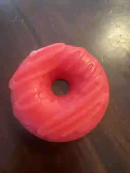
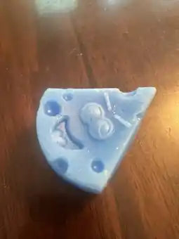
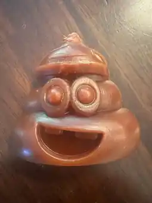
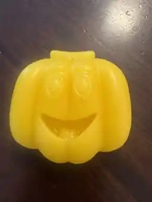

82
THE KID BEHIND THE WAXMAX THOUGHT
MAX THOUGHT
HOCKEY WAX
WAS BORING.
So he made it something worth collecting. Mystery bags, original shapes and a hockey brand built around having fun.
Every mystery bag hides one of Max's ridiculous wax shapes. Rip one open and see what you get.
COMMON • 10 / 24
The real shapes inside every mystery bag. Different pulls. Different odds. Same Max's Mystery Wax.




Choose the shape. Choose the color. Choose the scent. Name it. Then watch your wax get made.
So he made it something worth collecting. Mystery bags, original shapes and a hockey brand built around having fun.